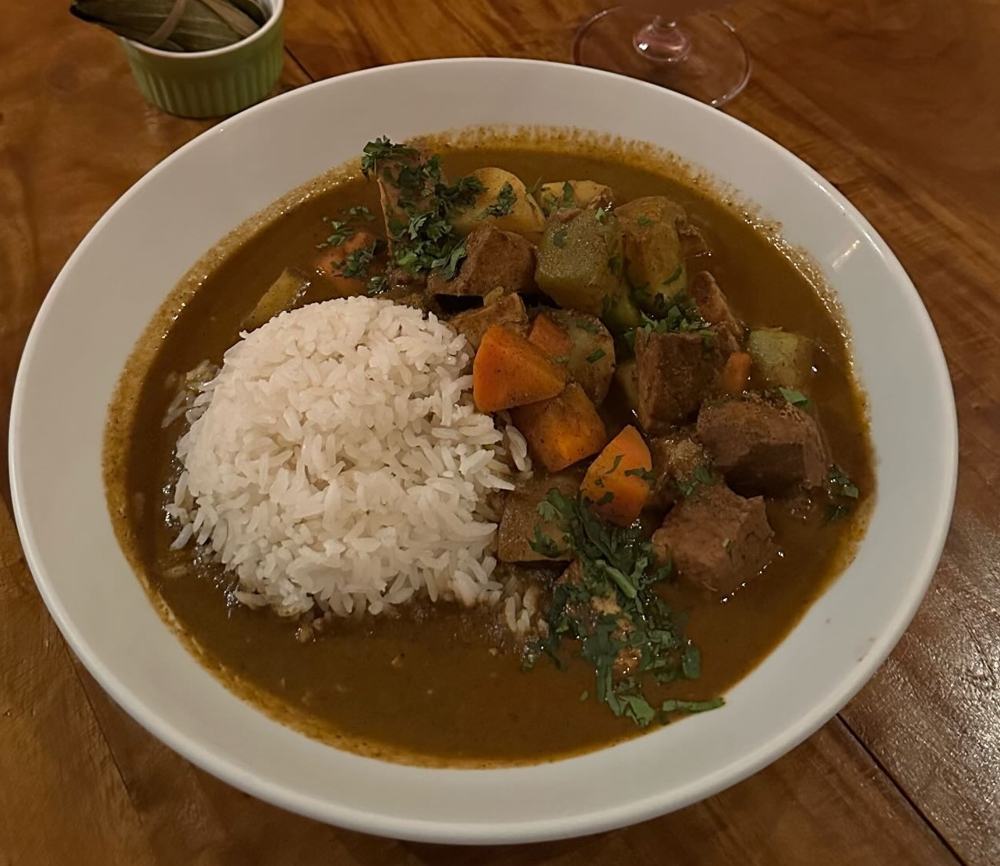

Home
Pepián

Description
Pepián is a thick, hearty meat and vegetable stew considered the national dish of Guatemala. It is known
for its rich, complex flavor profile derived from a unique, thick sauce (recado) made from toasted pumpkin seeds
(pepitas), sesame seeds, charred vegetables, and dried chiles.
What you'll need
- 6 tomatoes
- 8 tomatillos, husks removed
- 1 onion, peeled
- 2 garlic cloves
- 2 tbsp sesame seeds
- 2 tbsp hulled pumpkins seeds
- 1 think slice of French baguette
- sprigs fresh cilantro
- 1 tsp salt
- 2 black peppercorns
- 3 cups chicken broth
- ¼ cup olive oil
- 1 chayote, cut into 8 pieces
- 4 potatoes, thickly sliced
- 1 cup fresh corn kernels
Instructions
- Heat a large skillet over medium-high heat; place tomatoes, tomatillos, onion, and garlic into the hot
skillet and stir until vegetables are lightly charred, about 20 minutes. Remove vegetables from skillet;
stir sesame and pumpkin seeds into the hot skillet, stirring until seeds are lightly toasted, 2 to 3
minutes. Remove from heat.
- Toast baguette slice in a toaster. Place baguette slice, tomatoes, onion, garlic, sesame seeds, cilantro,
salt, and black peppercorns into a blender; pulse several times to chop, then blend the mixture until
smooth. Pour 3 cups chicken broth into blender and puree again.
- Strain blended sauce through a sieve and pour into a large saucepan; stir olive oil into sauce. Place over
medium-high heat, bring to a boil, and cook for 3 minutes. Stir chayote, potatoes, and corn into sauce; stir
in 3 cups chicken broth. Bring back to a boil, reduce heat to low, and simmer until chayote and potatoes are
tender, about 20 minutes.